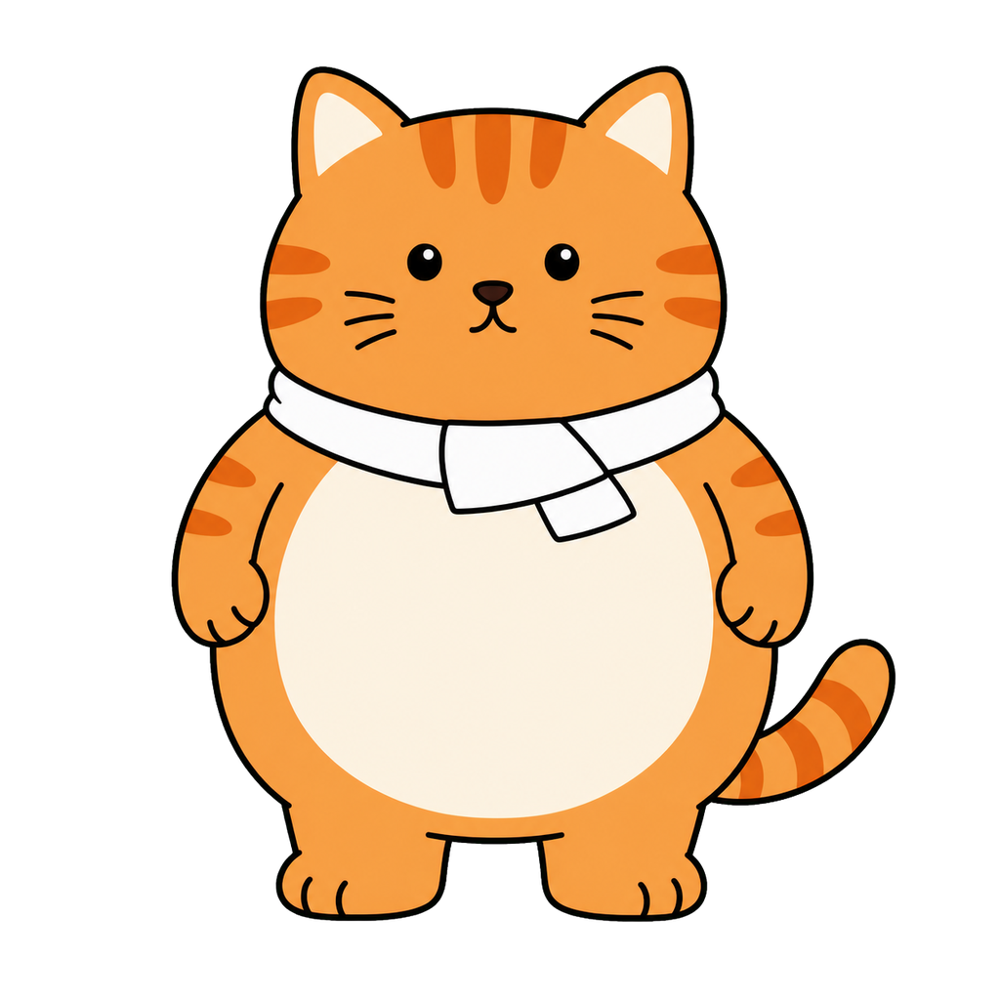
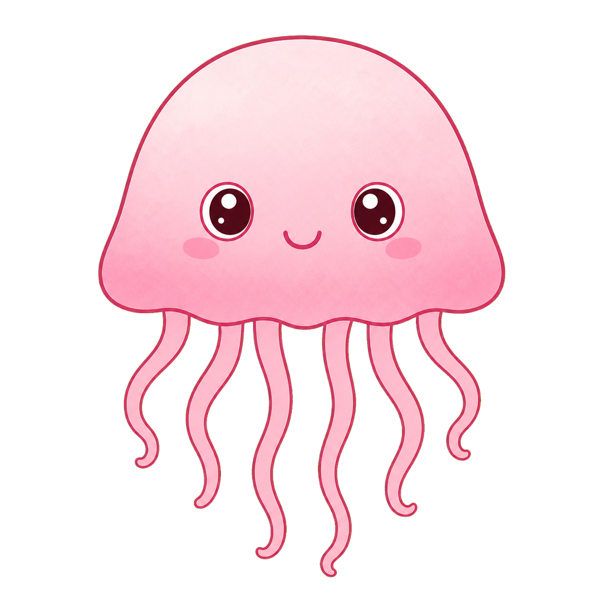

開場 + LINE 貼圖規格 + 免費工具地圖
20 分鐘把兩張地圖印進腦袋——規格速查卡 + 5 個工具的角色。這 20 分鐘聽懂了，後面 220 分鐘你都會跟得上。
橘貓站在白板前發呆——這就是這堂課要解決的事
你在這 4 個小時要做的事情，不是「學會畫圖」——畫圖交給 AI——而是搞清楚兩件事：
第一，LINE 要你交什麼格式的東西（規格速查卡，這堂課就教完）。第二，每一關用哪個工具（5 個免費工具的地圖，這堂課就講完）。
把這兩張地圖印進腦袋，後面 5 個單元都是按地圖走。沒有這兩張地圖，後面會像橘貓一樣站在白板前發呆。
5 個關鍵詞——後面 5 堂課會反覆用
這 5 個詞是這門課從頭到尾的共通語言，現在先記清楚，到 CH1-4 才不會在「主圖是哪一張」這種問題上卡住。
三段示範——工具地圖 + 規格速查卡 + 同對話對比
三段示範，每段不超過 90 秒。
把 5 個工具想成一條流水線上的 5 站，每站一句話：
Gemini（主力）：這門課的產圖主力。角色一致性最強——同一個對話裡產 8 張表情，AI 比較不會把角色畫跑掉。Nano Banana 是 Gemini 圖像功能的暱稱，後面一律稱 Gemini。
ChatGPT（備援）：當 Gemini 額度用光、或 Gemini 拒絕產某張圖（例如說「這像某 IP」），就切到 ChatGPT 跑同一份指令。
Pixian.AI（去背）：把 AI 產出的圖變成透明背景 PNG。一鍵去背，邊緣處理乾淨。
Photopea（修圖 + 調規格）：線上免費的修圖工具，瀏覽器打開就能用。我們會用它裁切到 370×320、把檔案壓到 1MB 以內、輸出主圖與 Tab 圖。
LINE Creators Market（上架後台）：填個資、上傳檔案、寫描述、選地區、按提交。CH1-5 整堂課都會待在這裡。
這張規格速查卡先逐欄看一遍：
| 類別 | 主貼圖尺寸 | 格式 | 大小上限 | 張數選項 | 額外限制 |
|---|---|---|---|---|---|
| 靜態 | 370×320 px | PNG | ≤ 1MB | 8 / 16 / 24 / 32 / 40 | — |
| 動態 | 320×270 px | APNG | ≤ 300KB | 8 / 16 / 24 | 5–20 幀、播放 ≤ 4 秒 |
| 訊息 | 270×270 px | PNG | ≤ 1MB | 8 / 16 / 24 | 含可換字疊圖 |
主圖（240×240）+ Tab 圖（96×74）三類貼圖都要附，規格相同。
LINE 規格以官方公告為準，本速查卡更新日期：2026-Q2。上架前再去 LINE Creators Market 官方頁確認一次最保險。
打開 Gemini，看兩種做法的差別：
A 路（建議）：同一個對話裡先產橘貓「笑」，再直接打「用同一隻貓，改成『哭』的表情」。AI 記得是哪隻貓，第二張還是同一隻。
B 路（最浪費）：產完第一張，關掉對話，開新對話從頭打完整描述。沒有上文，第二張橘貓的眼睛形狀、毛色、領巾都會跑掉。
你要產 8 張表情，每張都重開新對話等於做 8 次工，還做不出同一隻貓——這就是 AI 角色一致性最大的坑。入門班教的就是怎麼避開這個坑。
動手 60 秒——現在就決定你的角色
這 60 秒不選，後面 4 小時的角色設定、表情產圖、上架流程都會卡在「我到底要做什麼」的迴圈。不限定用打字、用筆寫、用便利貼貼螢幕邊緣都行。
寫完之後現場開放 2–3 位自願口頭分享（每人不超過 60 秒）。聽聽別人想做什麼，你會發現自己的題目其實一點都不奇怪。
回家功課——5 件事先準備好
這堂課最後幾分鐘給你一張準備清單，回家先把這 5 件事搞定，下週上課才不會卡關。
今晚回家就要確認的 5 件事：
今晚花 10 分鐘搞定這 5 件事，CH1-5 上架那 50 分鐘你才有時間慢慢按。今晚不做，下週上架那堂可能就會卡在簡訊驗證或地址沒帶。
課堂紙本素材——4 張可列印帶走
下面這 4 張就是課堂會發給你的紙本素材。每張右上有「📄 列印這張」按鈕——按下去會開新分頁印出 A4 一張，自己印或讓我們幫你印都行。後面 5 堂課都會用到，請收好。
LINE 貼圖規格速查卡
| 類別 | 主貼圖 | 格式 | 大小上限 | 張數 | 額外限制 |
|---|---|---|---|---|---|
| 靜態 | 370×320 px | PNG | ≤ 1MB | 8 / 16 / 24 / 32 / 40 | — |
| 動態 | 320×270 px | APNG | ≤ 300KB | 8 / 16 / 24 | 5–20 幀、播放 ≤ 4 秒 |
| 訊息 | 270×270 px | PNG | ≤ 1MB | 8 / 16 / 24 | 含可換字疊圖 |
三類貼圖都要附：主圖 240×240 px PNG（套組封面）+ Tab 圖 96×74 px PNG（鍵盤底部小圖示）。
- R1 低品質——解析度不足、色彩偏黃偏暗、線條模糊
- R2 角色不一致——8 張看起來不是同一隻
- R3 邊緣殘影——去背沒乾淨、有白邊或殘留底色
- R4 含他人 IP——像迪士尼角色 / 哆啦 A 夢 / 名牌 logo
- R5 含真實人物——直接拿照片去畫，沒抽象化
課前準備清單（今晚 10 分鐘搞定）
這 5 件事今晚回家就做，下週上課才不會卡。一項一項照打勾。
- ☐1. Gemini 帳號可登入
為什麼要：用 Google 帳號就能登。今晚就試一次，避免上課當天才發現需要 phone 驗證或地區限制。 - ☐2. ChatGPT 帳號可登入
為什麼要：備援用。Gemini 用光了無縫切換，兩家都要有。 - ☐3. LINE 帳號可在電腦登入
為什麼要：CH1-5 上架後台會用 LINE 帳號登入電腦版，先確認可以登。 - ☐4. Email 收信正常 + 手機可收簡訊
為什麼要：LINE Creators Market 註冊會發驗證信、SMS 驗證碼，今晚先確認信箱沒爆掉、手機能收到簡訊。 - ☐5. 銀行帳號 + 實體地址寫在紙上
為什麼要：LINE 上架後台規定要填，不代表你要賣，自用也得填。今晚先把帳號、地址寫好，CH1-5 上架那 50 分鐘不會再有時間讓你回家翻資料。
同對話多輪 vs 重開新對話 對比參考
- 4 張在同一個 Gemini 對話裡接著產
- 第 2-4 張只說「換 X 表情」
- AI 記得是哪隻貓，外觀守得住
- 每張都關掉重開新對話
- 每次 AI 都重新猜「橘色虎斑貓」長什麼樣
- 沒有上文，外觀每張都跑掉
CH1-2 / CH1-3 還會再用一次這張對比。圈出來的「眼睛形狀、毛色、領巾顏色」就是角色一致性檢查的重點。
動手練習小卡——60 秒決定你的角色
三欄填空，60 秒寫完。寫完留好，CH1-2 會直接接著用。怕沒靈感先看背面範例。
| 欄位 | 你的答案 |
|---|---|
| 角色 一句話描述 | |
| 工具 圈一個 | ☐ Gemini ☐ ChatGPT ☐ 兩家都用 |
| 一句話設定 給 AI 看的一句 |
| 角色 | 工具 | 一句話設定 | 長這樣 |
|---|---|---|---|
| 橘貓上班族 | Gemini | 圓滾滾橘色虎斑貓 + 白領巾，扁平卡通 + 粗線條 + 暖色調 |  |
| 粉紅水母 | Gemini | 透明粉色小水母 + 圓眼睛 + 軟身體，漸變水彩風 + 柔和邊緣 |  |
| 愛抱怨的咖啡杯 | ChatGPT | 白色陶瓷馬克杯 + 半瞇圓眼 + 細線手腳，扁平簡約 + 線條風 |
三個常見的坑——都是「以為晚一點再處理就好」
這三個坑的共同點：都是「以為等到 CH1-3、CH1-5 再說」。現在這 20 分鐘把它們記住，到後面才不會踩。
怎麼避：今晚就試著登入 Gemini 和 ChatGPT，不要拖到上課前 5 分鐘。
怎麼避：規格速查卡每堂課放在桌上隨時翻，動手前先確認自己在做的是哪一類。
怎麼避：記住「同對話多輪精修」這條原則，第 2 張之後一律在同一個對話裡接著打，不要關掉重開。
自我檢核——拿規格速查卡就能答
這兩題都不是記憶題，拿著規格速查卡 + 工具地圖就能答出來。先自己選一個答案，再看下面的解析。